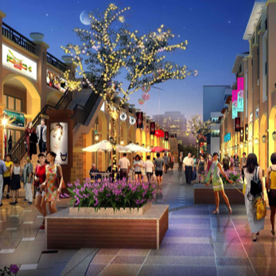

<!DOCTYPE html>
<html lang="en">
<head>
    <meta charset="UTF-8">
    <meta name="viewport" content="width=device-width,initial-scale=1,maximum-scale=1,user-scalable=no">
    <title></title>
    <link rel="stylesheet" href="css/public/swiper-3.4.2.min.css">
    <link rel="stylesheet" href="css/public/public.css">
    <link rel="stylesheet" href="css/Islamic_details.css">
</head>
<body>
    <div class="body_container">

        <!--banner 图片轮播 start-->
        <!--
        <div class="swiper-container">
            <div class="swiper-wrapper">
                <div class="swiper-slide">
                    
                </div>
                <div class="swiper-slide">
                    
                </div>
                <div class="swiper-slide">
                    
                </div>
            </div>
            <div class="swiper-pagination"></div>
        </div>

        <!--banner 图片轮播 end-->

        <!-- banner address start-->
    <!--
        <div class="banner_address">
            <div class="banner_address_title">
                荣昌清真大寺
            </div>
            <div class="banner_address_area">
                <span class="banner_address_area_left">渝北区</span>
                <span>12.00km</span>
            </div>
            <div class="border"></div>
            <div class="banner_address_come">
                <span class="bannner_adress_footprint"></span>
                <span>谁来过(
                <i>212</i>
                ) &gt;
            </span>
            </div>
        </div>
    -->
        <!-- banner address end-->

        <!--concat address start-->
    <!--
        <div class="contact_address">
            <div class="contact_address_content">
                <div>
                    <div class="concat_address_icon"></div>
                    <div class="concat_address_content">
                        地址:
                        <i>光电园中兴路5号</i>
                    </div>
                </div>
                <div>
                    <span class="bor-lef"></span>
                    <span class="concat_address_phone"></span>
                </div>
            </div>
        </div>
    -->
        <!--concat address end-->
        <!-- content container start -->
    <!--
        <div class="container">
            <div class="container_text">
                <div class="container_title">
                    介绍
                </div>
                <div class="container_content">
                    <div>
                        清真寺（Masjid）是伊斯兰教建筑群体的型制之一。是穆斯林举行礼拜、穆斯林举行宗教功课、举办宗教教育和宣教等活动的中心场所。亦称礼拜寺。
                    </div>
                    <div>
                        系阿拉伯语“麦斯吉德”(即叩拜之处)意译。《古兰经》云：“一切清真寺，都是真主的，故你们应当祈祷真主，
                        不要祈祷任何物”。中国唐宋时期称
                        为“堂”、“礼堂”、“祀堂”、“礼拜堂”，元代以后称“寺”、“回回堂”“礼拜寺”，
                        明代把伊斯兰教称为“清真教”，遂将“礼堂”等改称“清真寺”，沿用至今。
                    </div>
                    <div>
                        西北地区回、东乡、保安、撒拉等族穆斯林，至今仍沿袭原称“麦斯吉德”，或称“哲马尔提”(Jama‘at，即寺坊)。
                    </div>
                </div>
            </div>
        </div>
    -->

        <!-- content container end -->
    </div>


    <script src="js/public/phone.js"></script>
    <script src="js/public/jquery-2.2.3.min.js"></script>
    <script src="js/public/swiper-3.4.2.jquery.min.js"></script>
    <script src="js/public/public.js"></script>
    <script src="js/Islamic_details.js"></script>
</body>
</html>